无标题
发表于|更新于
|总字数:1.6k|阅读时长:7分钟|浏览量:|
对象的过滤
| 过滤方法 |
描述 |
eq() |
获取第 N 个元素 |
first() |
获取第一个元素 |
last() |
获取最后一个元素 |
hasClass() |
检查当前的元素是否含有某个特定的类，如果有，则返回 true |
filter() |
筛选出与指定表达式匹配的元素集合 |
not() |
删除与指定表达式匹配的元素 |
is() |
根据选择器、DOM 元素或 jQuery 对象来检测匹配元素集合，如果其中至少有一个元素符合这个给定的表达式就返回 true |
has() |
保留包含特定后代的元素，去掉那些不含有指定后代的元素 |
first()
1
2
3
4
| var $li = $('ul>li');
$li.first().css('background-color', 'red');
|
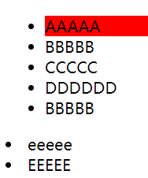
last()
1
2
3
|
$li.last().css('background-color', 'red');
|
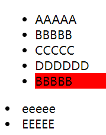
eq()
1
2
3
|
$li.eq(1).css('background-color', 'red');
|
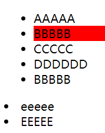
filter()
1
2
|
$li.filter('[title=hello]').css('background-color', 'red');
|
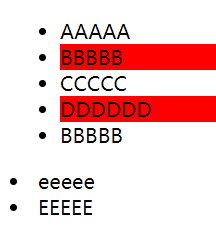
not()
1
2
3
|
$li.not('[title=hello]').css('background-color', 'red');
|
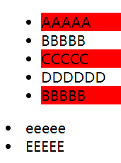
但上述的写法，将没有 title 属性的 li 元素也查询了出来，更符合题意的写法如下：
1
2
3
|
$li.filter('[title][title!=hello]').css('background-color', 'red');
|
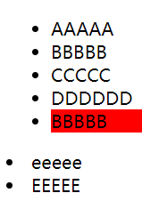
has()
1
2
|
$li.has('span').css('background-color', 'red');
|
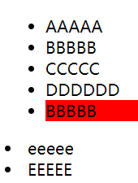
hasClass()、is()
1
2
3
4
5
6
7
|
if ($li.filter('[class=box2]').is('.box2')) {
$li.filter('[class=box2]').css('background-color', 'red');
}
|
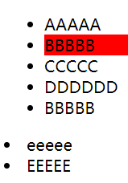
对象的查找
| 查找方法 |
描述 |
children() |
取得一个包含匹配的元素集合中每一个元素的所有子元素的元素集合 |
find() |
搜索所有与指定表达式匹配的元素。这个函数是找出正在处理的元素的后代元素的好方法 |
siblings() |
取得一个包含匹配的元素集合中每一个元素的所有唯一同辈元素的元素集合 |
next() |
取得一个包含匹配的元素集合中每一个元素紧邻的后一个同辈元素的元素集合 |
nextAll() |
查找当前元素之后所有的同辈元素 |
nextUntil() |
查找当前元素之后所有的同辈元素，直到遇到匹配的那个元素为止 |
prev() |
取得一个包含匹配的元素集合中每一个元素紧邻的前一个同辈元素的元素集合 |
prevAll() |
查找当前元素之前所有的同辈元素 |
prevUntil() |
查找当前元素之前所有的同辈元素，直到遇到匹配的那个元素为止 |
offsetParent() |
返回第一个匹配元素用于定位的父节点 |
parent() |
取得一个包含着所有匹配元素的唯一父元素的元素集合 |
parentsUntil() |
查找当前元素的所有的父辈元素，直到遇到匹配的那个元素为止 |
children()
1
2
3
| var $ul = $('ul');
$ul.children('span:eq(1)').css('background-color', 'red');
|
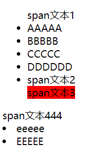
find()
1
2
|
$ul.find('span:eq(1)').css('background-color', 'red');
|
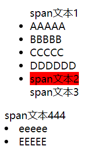
parent()、offsetParent()
1
2
|
$ul.parent().css('background-color', 'red');
|
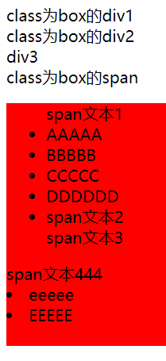
1
2
|
$ul.offsetParent().css('background-color', 'red');
|
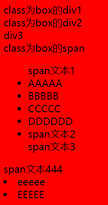
prev()、prevAll()、next()、nextAll()
1
2
|
$('#cc').prev('li').css('background-color', 'red');
|
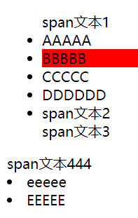
1
2
|
$('#cc').prevAll('li').css('background-color', 'red');
|
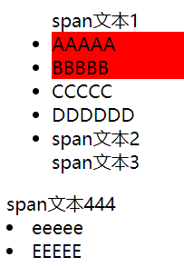
1
2
|
$('#cc').next('li').css('background-color', 'red');
|
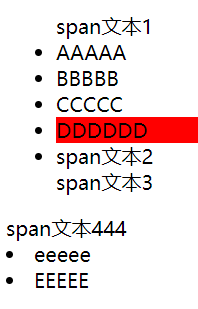
1
2
|
$('#cc').nextAll('li').css('background-color', 'red');
|
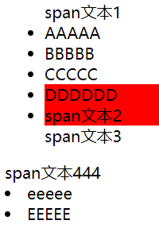
siblings()
1
2
|
$('#cc').siblings('li').css('background-color', 'red');
|
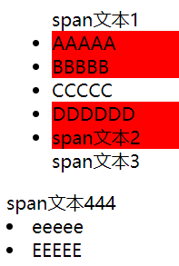
练习：爱好选择器
1
2
3
4
5
6
7
8
9
10
11
12
13
| <form>
你爱好的运动是？<input type="checkbox" id="checkedAllBox"/>全选/全不选
<br/>
<input type="checkbox" name="items" value="足球"/> 足球
<input type="checkbox" name="items" value="篮球"/> 篮球
<input type="checkbox" name="items" value="羽毛球"/> 羽毛球
<input type="checkbox" name="items" value="乒乓球"/> 乒乓球
<br/>
<input type="button" id="checkedAllBtn" value="全选"/>
<input type="button" id="checkedNoBtn" value="全不选"/>
<input type="button" id="checkedRevBtn" value="反选"/>
<input type="button" id="sendBtn" value="提交"/>
</form>
|
1
2
3
4
5
6
7
8
9
10
11
12
13
14
15
16
17
18
19
20
21
22
23
24
25
26
27
28
29
30
31
32
33
34
35
36
37
38
39
40
41
42
43
44
45
| var $checkedAllBox = $('#checkedAllBox');
var $items = $(': checkbox [name = items]');
var $checkedAllBtn = $('#checkedAllBtn');
$checkedAllBtn.click(function () {
$items.prop('checked', true);
$checkedAllBox.prop('checked', true);
});
var $checkedNoBtn = $('#checkedNoBtn');
$checkedNoBtn.click(function () {
$items.prop('checked', false);
$checkedAllBox.prop('checked', false);
});
var $checkedRevBtn = $('#checkedRevBtn');
$checkedRevBtn.click(function () {
$items.each(function () {
this.checked = ! this.checked;
});
$checkedAllBox.prop('checked', $ items.not(': checked').length === 0);
});
var $sendBtn = $('#sendBtn');
$sendBtn.click(function () {
var arr = [];
$items.filter(': checked').each(function () {
arr.push(this.value);
});
alert(arr.join(','));
});
var $checkedAllBox = $('#checkedAllBox');
$checkedAllBox.click(function () {
$items.prop('checked', this.checked);
});
$items.click(function () {
$checkedAllBox.prop('checked', $ items.not(': checked').length === 0);
});
|
效果
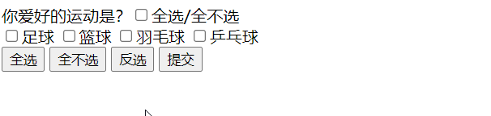